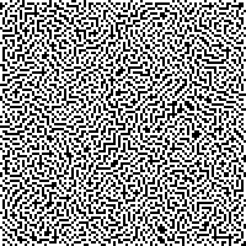
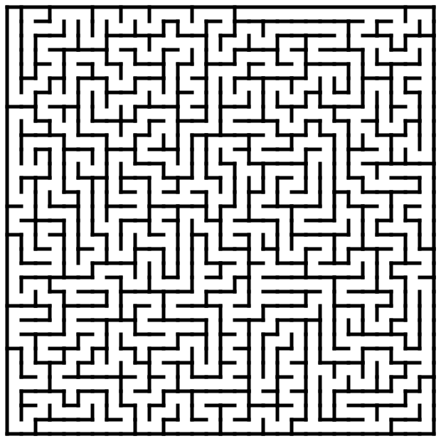

生成迷宫图
http://code.activestate.com/recipes/578356-random-maze-generator/
https://en.wikipedia.org/wiki/Maze_generation_algorithm
想实现A*算法和BFS比较验证正确性，所以想构造数据来跑测试，迷宫图是比较好的例子。 Wikipedia上给出了很多种生成迷宫图的算法。
下面是一份生成迷宫图的代码，大致思路是使用DFS进行探路，所有检查过的地方都标记”可以访问“。 这份代码只能指定初始点，没有办法指定结束点，结束点可以在所有到达过的”可以访问“点上任意选择。 因为每次只需要扩展一个节点，所以使用显式的栈也非常简单。
为了不产生回路这样的情况，在扩展下一个节点的时候，会看这个节点是否只有1个可以访问的节点。 代码最后还利用PIL生成了图像，我觉得为了好看，应该白色的地方是”可以访问节点“，而黑色地方是障碍物。
# Random Maze Generator using Depth-first Search
# http://en.wikipedia.org/wiki/Maze_generation_algorithm
# FB - 20121214
import random
from PIL import Image
imgx = 500; imgy = 500
image = Image.new("RGB", (imgx, imgy))
pixels = image.load()
mx = 100; my = 100 # width and height of the maze
maze = [[0 for x in range(mx)] for y in range(my)]
dx = [0, 1, 0, -1]; dy = [-1, 0, 1, 0] # 4 directions to move in the maze
color = [(0,0, 0), (255, 255, 255)] # RGB colors of the maze
# start the maze from a random cell
# stack = [(random.randint(0, mx - 1), random.randint(0, my - 1))]
stack = [(0, 0)]
while len(stack) > 0:
(cx, cy) = stack[-1]
maze[cy][cx] = 1
# find a new cell to add
nlst = [] # list of available neighbors
for i in range(4):
nx = cx + dx[i]; ny = cy + dy[i]
if nx >= 0 and nx < mx and ny >= 0 and ny < my:
if maze[ny][nx] == 0:
# of occupied neighbors must be 1
ctr = 0
for j in range(4):
ex = nx + dx[j]; ey = ny + dy[j]
if ex >= 0 and ex < mx and ey >= 0 and ey < my:
if maze[ey][ex] == 1: ctr += 1
if ctr == 1: nlst.append(i)
# if 1 or more neighbors available then randomly select one and move
if len(nlst) > 0:
ir = nlst[random.randint(0, len(nlst) - 1)]
cx += dx[ir]; cy += dy[ir]
stack.append((cx, cy))
else: stack.pop()
# 翻转颜色，白色是可以访问节点，黑色是不可以访问节点。
for x in maze:
x = [(1-v) for v in x]
# paint the maze
for ky in range(imgy):
for kx in range(imgx):
pixels[kx, ky] = color[maze[my * ky // imgy][mx * kx // imgx]]
image.save("Maze_" + str(mx) + "x" + str(my) + ".png", "PNG")

UPDATE@202301 上面打印出来的图片有点不太友好，我重新找了另外一个版本 https://scipython.com/blog/making-a-maze/ 可以打印出SVG, 但是好像输出难度不是特别高
# make_maze.py
import random
# Create a maze using the depth-first algorithm described at
# https://scipython.com/blog/making-a-maze/
# Christian Hill, April 2017.
class Cell:
"""A cell in the maze.
A maze "Cell" is a point in the grid which may be surrounded by walls to
the north, east, south or west.
"""
# A wall separates a pair of cells in the N-S or W-E directions.
wall_pairs = {'N': 'S', 'S': 'N', 'E': 'W', 'W': 'E'}
def __init__(self, x, y):
"""Initialize the cell at (x,y). At first it is surrounded by walls."""
self.x, self.y = x, y
self.walls = {'N': True, 'S': True, 'E': True, 'W': True}
def has_all_walls(self):
"""Does this cell still have all its walls?"""
return all(self.walls.values())
def knock_down_wall(self, other, wall):
"""Knock down the wall between cells self and other."""
self.walls[wall] = False
other.walls[Cell.wall_pairs[wall]] = False
class Maze:
"""A Maze, represented as a grid of cells."""
def __init__(self, nx, ny, ix=0, iy=0):
"""Initialize the maze grid.
The maze consists of nx x ny cells and will be constructed starting
at the cell indexed at (ix, iy).
"""
self.nx, self.ny = nx, ny
self.ix, self.iy = ix, iy
self.maze_map = [[Cell(x, y) for y in range(ny)] for x in range(nx)]
def cell_at(self, x, y):
"""Return the Cell object at (x,y)."""
return self.maze_map[x][y]
def __str__(self):
"""Return a (crude) string representation of the maze."""
maze_rows = ['-' * self.nx * 2]
for y in range(self.ny):
maze_row = ['|']
for x in range(self.nx):
if self.maze_map[x][y].walls['E']:
maze_row.append(' |')
else:
maze_row.append(' ')
maze_rows.append(''.join(maze_row))
maze_row = ['|']
for x in range(self.nx):
if self.maze_map[x][y].walls['S']:
maze_row.append('-+')
else:
maze_row.append(' +')
maze_rows.append(''.join(maze_row))
return '\n'.join(maze_rows)
def write_svg(self, filename, height=500):
"""Write an SVG image of the maze to filename."""
aspect_ratio = self.nx / self.ny
# Pad the maze all around by this amount.
padding = 10
# Height and width of the maze image (excluding padding), in pixels
width = int(height * aspect_ratio)
# Scaling factors mapping maze coordinates to image coordinates
scy, scx = height / self.ny, width / self.nx
def write_wall(ww_f, ww_x1, ww_y1, ww_x2, ww_y2):
"""Write a single wall to the SVG image file handle f."""
print('<line x1="{}" y1="{}" x2="{}" y2="{}"/>'
.format(ww_x1, ww_y1, ww_x2, ww_y2), file=ww_f)
# Write the SVG image file for maze
with open(filename, 'w') as f:
# SVG preamble and styles.
print('<?xml version="1.0" encoding="utf-8"?>', file=f)
print('<svg xmlns="http://www.w3.org/2000/svg"', file=f)
print(' xmlns:xlink="http://www.w3.org/1999/xlink"', file=f)
print(' width="{:d}" height="{:d}" viewBox="{} {} {} {}">'
.format(width + 2 * padding, height + 2 * padding,
-padding, -padding, width + 2 * padding, height + 2 * padding),
file=f)
print('<defs>\n<style type="text/css"><![CDATA[', file=f)
print('line {', file=f)
print(' stroke: #000000;\n stroke-linecap: square;', file=f)
print(' stroke-width: 5;\n}', file=f)
print(']]></style>\n</defs>', file=f)
# Draw the "South" and "East" walls of each cell, if present (these
# are the "North" and "West" walls of a neighbouring cell in
# general, of course).
for x in range(self.nx):
for y in range(self.ny):
if self.cell_at(x, y).walls['S']:
x1, y1, x2, y2 = x * scx, (y + 1) * scy, (x + 1) * scx, (y + 1) * scy
write_wall(f, x1, y1, x2, y2)
if self.cell_at(x, y).walls['E']:
x1, y1, x2, y2 = (x + 1) * scx, y * scy, (x + 1) * scx, (y + 1) * scy
write_wall(f, x1, y1, x2, y2)
# Draw the North and West maze border, which won't have been drawn
# by the procedure above.
print('<line x1="0" y1="0" x2="{}" y2="0"/>'.format(width), file=f)
print('<line x1="0" y1="0" x2="0" y2="{}"/>'.format(height), file=f)
print('</svg>', file=f)
def find_valid_neighbours(self, cell):
"""Return a list of unvisited neighbours to cell."""
delta = [('W', (-1, 0)),
('E', (1, 0)),
('S', (0, 1)),
('N', (0, -1))]
neighbours = []
for direction, (dx, dy) in delta:
x2, y2 = cell.x + dx, cell.y + dy
if (0 <= x2 < self.nx) and (0 <= y2 < self.ny):
neighbour = self.cell_at(x2, y2)
if neighbour.has_all_walls():
neighbours.append((direction, neighbour))
return neighbours
def make_maze(self):
# Total number of cells.
n = self.nx * self.ny
cell_stack = []
current_cell = self.cell_at(self.ix, self.iy)
# Total number of visited cells during maze construction.
nv = 1
while nv < n:
neighbours = self.find_valid_neighbours(current_cell)
if not neighbours:
# We've reached a dead end: backtrack.
current_cell = cell_stack.pop()
continue
# Choose a random neighbouring cell and move to it.
direction, next_cell = random.choice(neighbours)
current_cell.knock_down_wall(next_cell, direction)
cell_stack.append(current_cell)
current_cell = next_cell
nv += 1
def make_maze(output, nx, ny, ix, iy, height):
maze = Maze(nx, ny, ix, iy)
maze.make_maze()
maze.write_svg(output, height=height)
# Maze dimensions (ncols, nrows)
nx, ny = 30, 30
# Maze entry position
ix, iy = 0, 0
height = 600
make_maze('maze.svg', nx, ny, ix, iy, height)
